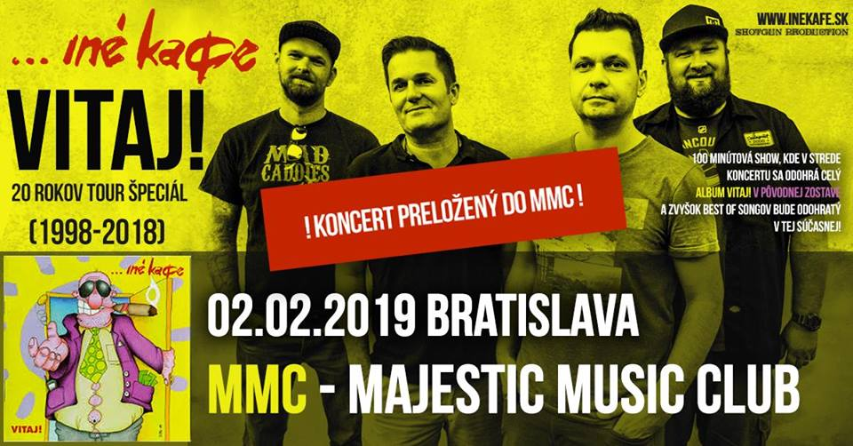

02/02/2019 INÉ KAFE - 20 Rokov Vitaj! Tour Špeciál – MMC, Bratislava (report/recenzia)
 Kapelu Iné Kafe som sledoval viacmenej iba v rámci ich tvorby, ktorá spadá ešte do 90-tych rokov. Teda pri ich kvázi zaèiatkoch. Všetko èo vyprodukovali po roku 2000 išlo – samozrejme pod¾a mòa - úplne z kopca. Navyše krivého kopca. Ich �áner sa diametrálne menil nielen hudobne, ale hlavne èo sa nejakıch textovıch ideí tıka. Jeden z ich ostatnejších albumov som mal dokonca problém dopoèúva� dokonca. A je to škoda. Prvı album Iné Kafé „Situácia“ (kapela tvrdí, �e to je demo, ale mne to príde ako absolútne regulérny album) z roku 1997 toti� pova�ujem za jednu z najlepších vecí, èo kedy slovenská punk-rocková scéna vyprodukovala. Tá energia, nasranos�, priamoèiaros� a akási protimeèiarovská protisystémová revolta bola akoby vami niekto triasol so slovami: „Spamätaj sa èloveèe!“ hneï potom, ako vám uštedril riadnu cez papu¾u. A to všetko v prevedení punku nového amerického strihu (na Slovensku komicky oznaèeného ako neopunk), ktorı tu dovtedy v podstate nikto neprodukoval. Nasledujúci album na seba nenechal dlho èaka� a vyšiel o rok na to. Vitaj! síce z politickıch textov jemne z¾avil, za to ale vôbec neubral na dynamike, ešte viac vycibril melódie, je v òom jasne poèu� lyrické vyzretie a samozrejme zaznamenáva aj hudobnícky a štúdiovı pokrok. Spevy s vokálmi sa nekompromisne vyspievali a vyladili a vïaka ideálnej hlasovej súhre medzi hlavnım spevom a vokálom je to rados� pre uši. Stále �iadne špekulácie; jednoznaèná, úderná, priamoèiara nakladaèka. Aj vïaka tımto veciam sa nielen mne, ale urèite mnohım trochu viac otvorili obzory, ktoré dovtedy obsahovali tak maximálne Zónu, Davovku, Visáèov, èi Sex Pistols – aj do slovenskıch komerènıch hitparád sa dostali Offspring èi Green Day a mne sa vyskytla mo�nos� spozna� kapely ako NoFX èi Bad Religion, ktorá pre mòa do dnes zostáva top. Dá sa o tom polemizova�, ale bez kapely Ine Kafé a ich albumu Vitaj! by to všetko mo�no vyzeralo tochu inak.
Keï som sa teda doèítal, �e chalani pripravujú malú tour k 20. vıroèiu tohto albumu, kde ho plánujú zahra� kompletne celı a navyše v pôvodnej zostave (a predıchal šok, �e mi opä� raz vyfúkli nápad :D), bolo to z mojej strany u� len o tom, ktoré mesto si z ponuky Praha/Brno/Bratislava vyberiem. Aj keï som prvıkrát Iné Kafe videl u� v roku 1999, (skoro) pôvodného speváka Cibiho som u� nestihol, a tak by to bol takmer „hriech“ túto píle�itos� vymeška�. Nakoniec som zvolil poslednı – pre ve¾kı záujem pridanı a behom tı�dòa ešte aj pre údajné problémy presunutı - koncert v bratislavskom MMC.
Spolu s par�ákom Rolom, ktorı sa opä� na moje potešenie na poslednú chví¾u ku mne pripojil, sme v rovnakıch priestoroch za�ili v roku 2013 aj práve spomínanıch Bad Religion (to je u� naozaj 6 rokov??), a tak sme boli zvedaví, èi sa kapacitne dostatoène ve¾ká sála zaplní rovnako. Celı priestor MMC a súvisiacich podnikov okolo je jedná ve¾ká rados� a doprial by som také nieèo snáï ka�dému mestu (a teda hlavne nášmu). Zatia¾, èo sme to rozoberali pri vıbornom Gamrinuse v Excelente, kde stále noví príchádzajúci márne h¾adali vo¾nı stôl, do MMC sa u� zaèínali zbieha� ¾udia, vo ved¾ajšej knajpe to �ilo podobne a dole v Randali sa u� chystala dokonca konkurenèná akcia! V našich konèinách nepredstavite¾né. Pri našom príchode nieèo po 19tej veèer to ešte vyzeralo, �e sa niè nedeje, no keï sme sa u� chceli tesne pred zaèiatkom koncertu presunú� dnu, museli sme si vystá� slušnı rad. Všetko – vrátane šatní – však išlo relatívne rıchlo; pri takom mno�stve ¾udí sa rozhodne nedá hovori� o nejakom probléme.
Po príchode dnu nás víta takmer do posledného metra štvorcového zaplnená sála, vrátane hornıch balkónov, kde – musím to spomenú� – väèšina ¾udí sedela celı koncert ako v divadle bez nulového prejavu nejakej emócie, ako nejakı nastejd�ovanı komparz (aspoò teda poèas asi tıch troch razov, èo som sa tam obzrel :D). Nad pripravenım pódiom visí obrovskı �ltı banner zobrazujúci tuèného chlapíka s cigarou v papuli – cover albumu Vitaj!. Opä� raz musím vyzdvihnú� servis – vzh¾adom na odhadom tisícku ¾udí, bary v zadnej èasti nemali absolútne �iadne problémy, èakaèka na pivo bola pred, po, aj poèas celého koncertu v podstate nulová. Produkènı tıchto priestorov by mohli v rámci kateringu robi� školenie kolegom z inchebského letného koncertu The Offspring, kde to bolo èisté fiasko. (èítaj tu). Jedinú malú vıtku za celı veèer mô�em ma� maximálne k securi�ákovi, ktorı mal na starosti vypúš�anie ¾udí von. Keï�e show nejakıch 20 minút meškala, mnohí sa rozhodli ešte vybehnú� na wecko alebo cigu a jemu akosi nesmierne vadilo, �e musí rozdáva� všetkım lístky :D
Bolo vopred avizované, �e koncert bude poskladanı z troch úsekov. Najskôr zaène súèasná zostava Iné Kafé s prierezom “hitov”, potom príde na rad oèakávaná “Vitaj!” pasá� a ukonèí to opä� aktuálna trojica. My sme sem prišli vyslovene na tú strednú èas�, a tak popri prvıch songoch ešte kecáme a obèerstvujeme. Musím poveda�, �e úvodnı set ma naozaj nijako nenadchıòa, pre mòa viac-menej neznáme songy zrejme z tej novšej tvorby znejú ako nejaká popová heslovitá nuda, a tak vyèkávam na to, kvôli èomu som sem prišiel. A nemusím dlho. Po asi piatich veciach sa zotmie, do reprákov je pustená celkom zábavná sluèka, ktorá otravne dookola pripomína “Nerušte spojenie a èakajte prosím … ” a my sa u� popritom sna�íme prepcha� aspoò trochu bli�šie k pódiu. Bohu�ia¾, môj malı plán, �e generaène novšia skupina fanúšikov sa poèas “vitaj” èasti presunie trošku spä� sa nenaplnila, a tak sa musíme uspokoji� s od pódia pekelne vzdialenım miestom. Za to ale s ve¾mi blízkym smerom k vıèapu, kde taktie� podávajú excelentnı Gambáè a navyše za normálnu cenu.
V tom sa u� ale svetlá rozsvecujú nanovo, na stage vybieha pôvodná štvorèlenná zostava a do publika sa okam�ite zaène sypa� prvá skladba “Vitaj!”. Hneï ma to rozpohybuje - aspoò do tej miery, ako je to v tomto tesnom dave mo�né. Skvelá chyt¾avá, melodická skladba, asi najlepší refrén albumu a mierne sarkastické podanie toho, èo mô�e mladı èlovek reálne v �ivote oèakáva�. (teda na ten sarkazmus pozor, pripomínam, sme v 90tych rokoch a vra�dy a vıbuchy v autách boli bohu�ia¾ na Slovensku v správach tak nejak naozaj na dennom poriadku). Bez akejko¾vek pauzy rovno do druhej veci s názvom “Závis�”, ktorá bola v novembri 1998 prezentovaná aj ako druhı singel albumu. Nadmieru trefnı text, v ktorom sa urèite nájde kopec ¾udí (a ak nie, tak “hádaj, v kom je tento problém“). Rıchlovka prezmenu s najlepším riffom na albume, dvojhlasy a vokály presne tam, kde majú by� a dos� netradiène šikovné basové sólo v podaní Waya, ktorı si evidentne koncert u�íval aj neustálym poletovaním po pódiu od zaèiatku a� do konca. Kto vie preèo sa aj jemu nedostalo mikrofónu; minimálne v zborovıch èastiach by to urèite niè nepokazilo. Nasleduje trochu ubrania z plynu v podobe skladby “Ve¾kou palicou”, ktorá sa taktie� okam�ite stretáva s ve¾kım nadšením publika. Opä� uštipaènı útok smerom k “hornım desa�tisícom” v pohodovom rezkom rytme. A� po tretej skladbe sa kapela na chví¾u zastaví a nasleduje Cibiho – ktorı sa suverénne zhostil moderovania tejto show akoby to mal na programe víkend èo víkend – privítanie sa s publikom a menší pokec, o èo tu dnes vlastne ide. Nasleduje ïalšia rıchlovka “Posledná záchrana”, ktorá patrila pred tımi 20timi rokmi k mojím ob¾úbenım. Berie si toti� na mušku tentokrát menej tradiènú tému o hudobnej situácií v našich dobovıch rádiovıch a televíznych éteroch. Album toti� vyšiel v podstate po nieko¾koroènej tzv. dancefloorovej vlne a kto si tie èasy pamätá, iste presne chápe, èo chlapci v jednom rozhovore mysleli vetou “Chceli sme vráti� rockovú muziku spä� na vrchol.” A presne toto skvelo opísali aj vo vyššie uvedenom songu, kde oproti oficiálnej verzii pridali aj malı stop-time pred druhou slohou a ten tam zapasoval „jak ric na šerbe¾“! Nasleduje jedna zo skladieb, ktorıch autorom je Wayo. “Krutá Pravda” v tvrdom punk-rockovom rytme hovorí o tom, �e problémy a nielen�e neriešia, ale sa nejako ani nechcú vidie�. A ako v�dy, nieèo sa zaène robi� a� keï je neskoro. To bohu�ia¾ platí do dnes. Aj ïalšia skladba je z basákovho pera - jedna z najzaujímavejších vecí na albume, ktorej èlovek neporozumeje, ak nepozná aj album Situácia. Skladba je toti� skladaèkou názvov piesní práve z predošlého albumu a bola zrejme urobená mo�no aj presne pre tento úèel. Dostala vısti�nı názov “Iné kafe” a jej ska-punkovı rytmus so zborovım refrénom je jednoznaène vıbornım spestrením. Chlapci sa tu nevyhli menšej chybe na zaèiatku - nie som si istı ale asi to bol Dodo, ktorı urobil o nejakı ten prechodík navyše :D Jednoznaène najznámejšiou hitovkou, na ktorú bol natoèenı aj jednoduchı, ale pod¾a mòa skvelı punkovı klip, a ktorú zrejme èasto ako jedinú z toho albumu hrá Iné Kafe aj na svojich štandardnıch koncertoch je „090X“. Na danú dobu a síce konèiace sa 90-roky a zaèínajúci masovı boom mobilov, (z ka�dej druhej reklamy na èloveka vyskakovalo „Odstrihni sa!“) a ten, kto ho u� mal, bol za malého „boha“ – prosto geniálny textovı nápad v presne správny èas. Toto jednoducho prerazi� muselo. Skladba v riffovıch pasá�ach pri koncertnom zoskupení o jednej gitare znie prive¾mi sucho ale nevadí, „jéjéjeee“ spieva na plné hrdlo celé publikum. A po tomto prichádza prvé prekvapenie veèera, ktoré som tak trochu aj èakal – akurát, �e nie takto skoro. Chlapci odpália úvodnú skladbu zo Situácie s názvom “Zrkadlo” a poviem vám, moje srdce plesá :) Skvelá vec, úplnı symbol tej spomínanej nasranosti smerom k „vyvolenım“ v celej svojej paráde! Keby som mal o desa� rokov menej (respektíve o rovnakı poèet pív viac), seriem na to a u� niekde vpredu roztáèam pogo! :) Ak malo mnoho z dnešnıch prítomnıch len matnú predstavu o albume Vitaj! a naštudovali si ho len kvôli tomu, �e to bol ohlásenı zmysel tejto tour, teraz u� museli by� naozaj mimo – a na viacerıch to aj bolo vidie� :D Pred ïalšou skladbou Cibi upozoròuje na menšie spomalenie, preto�e ako tvrdí, sami u� nie sú najmladši a nedá sa ís� celı koncert v takom rıchlom tempe. Kto ale dokonale pozná album Vitaj! sa nachyta� nenechá a ve¾mi dobre vie, �e nasleduje najtvrdšia a najrıchlejšia vec „Nová vlna“. Naozaj prudká priam hardcoreová zále�itos� a je obdivuhodné, èo všetko Dodo pri svojej "postavièke" doká�e za bicími zvláda� :) Par�ákovi Rolovi - tie� bubeníkovi - stihnem prehodi�, �e sa na seba neskutoène (fyzicky) podobajú :D Hrá presne, všetko èo treba a navyše stíha ešte aj vokály. Klobúk dole. V nasledujúcej skladbe sa tempo nijako extra nespoma¾uje – „Pomô�te mi so mnou“ je ïalšia skvelá vec od Vratka, ktorı sa ale neodvá�i spieva� dvojhlas v celej skladbe ako je to v štúdiovej verzii. Treba ale poveda�, �e je na òom vidno, ako ho táto jeho „stará“ úloha baví a celkovo mi príde celı jeho prejav akosi ove¾a prirodzenejší a ïaleko zá�ivnejší ako je to v súèasnom Iné Kafe. Som si istı, �e on sám mal z toho rovnakı pocit. Skladba „Systém“ – jediná vec od Cibiho, ale taktie� vydarená – „Máme tu západ, veï to sme v�dy chceli, len trochu inı jak sme si mysleli ...“ – typickı myšlienkovı pochod z porevoluènıch rokov naplnenıch ve¾kımi oèakávaniami, ale zároveò divokım rozkvetom kapitalizmu, z ktorého sa (takmer) všetci tešili, no stále len málokto s ním vedel narába�. Album Situácia obsahuje dve skladby, ktoré boli po menšej úprave (k lepšiemu) zaradené aj na album Vitaj! Prvá z nich je „Európsky raj“, kde bol mierne vyladenı text – skvelá hitoveèka opä� plná sarkazmu o našich vtedy ešte zúfalo márnych ambíciach zapoji� sa do hospodárskych a „obrannıch“ štruktúr. Naša krajina a jej prefíkaní podnikaví obyvatelia mali na úspešnı chod štátu v�dy ten svoj vlastnı recept :) Tou druhou je „Dobrá rada“, ktorá sa z akustického dostáva do klasického tvrdšieho prevedenia a urèite jej to prospelo. Ïalšia zábavná vec, ktorá poukazuje na trápenie s polovièkami a recept, ako to vyrieši� – samozrejme Cibi správne poukazuje, �e ide naozaj iba o �art. Kto pozná detailne históriu Iné Kafe mo�no pozná príbeh, ako sa tento èlovek vlastne dostal do kapely – vraj ho chalani zastavili po ceste z ich koncertu, lebo sa im zdalo, �e vyzerá ako Grega Graffin z Bad Religion. A skutoène, Cibiho prejav ho celı èas pripomína a ak je táto story pravda, rozhodne nemohli ma� väèšie š�astie a vybra� si lepšie. No aká je asi pravdepodobnos�, �e potrebujete speváka, stretnete a zastavíte típka, ktorı vám pripomína vášho ob¾úbeného, ten bude súhlasi�, �e sa dá za mikrofón a navyše mu to skutoène dokonale ide! Jednoducho niektorım veciam asi naozaj prajú hviezdy alebo èo ... „Boles� nevinnıch nezaujíma tıch, od ktorıch by mala prís� pomoc prvá.“ Tak tento citát z predposlednej skladby „To nie!“ mám nejako zafixovanı v hlave u� 20 rokov. A radí sa opä� smelo medzi tie najtvrdšie na platni. No a na rade je posledná, ktorú príde uvies� spoza bicích jej autor Dodo, a teda tım aj on prispel svojou troškou do tohto diela. Mo�no aj preto je Vitaj! tak dobrı album - autorsky sa na òom podie¾ali všetci štyria èlenovia. Vlastne vôbec nechápem, ako mohli vtedy 20 roèní chlapci vyprodukova� textovo tak vyzreté veci. A rovnako ako sa zvukovo takto kvalitná vec dala pri vtedajších, hlavne technickıch pomeroch, zvládnu� nahra� za 1 tı�deò. Ešte raz, jeden tı�deò! A to so špièkovım mixom, kde hlavne spevy sú úplne dokonalé. Ešte raz spomeniem imaginárny zlo�enı obrovskı klobúk. „Nerušte spojenie“ je v podstate takı malı bonus na záver, ale zároveò mi príde ako takı pomyselnı symbol celej tejto skvelej nahrávky. Po tomto svetlá opä� zhasínajú a polovica èlenov „vitaj“ zostavy sa s pódiom lúèi. My sa poberáme trochu osvie�i� na vzduch a rozobra�, èo sme práve videli a poèuli. Do sály sa vraciame stále poèas druhého setu aktuálnej zostavy, ale ani takto dobre rozbehnutıch a o nieèo viac podgurá�enıch nás to nejako neoslovuje. Spravili sme ale ve¾mi dobre. Na prídavok toti� ešte raz a teraz u� naozaj neèakane naskakuje „vitaj“ zostava, a odpa¾ujú ešte jednu skvelú hitovku zo Situácie – „Sám proti všetkım“. Som nesmierne potešenı a svoju poslednú energiu vrazím do tejto skladby. Takıto záver ma naozaj v pozitívnom slova zmysle dorazil. Ïalšie bonusy pridáva ešte nová zostava. Jediné na èom sa zhodujeme a za èo musíme pochváli� aj „súèasné“ Iné Kafe sú skutoène dobré spevy. Basák a bubeník spievajú pozadia vynikajúco a naladene. Naozaj posledná vec patrí Vratkovi a jeho akustickému performance. A to akustickému doslova - hraje na odpojenej gitare. Nepochopil som, èi to bol zámer, alebo technická chyba. Ka�dopádne na ¾udí to fungovalo a tak asi dobre.
Perfektná show, takmer všetko pod¾a predstáv, mo�no aj navyše. Áno, spevy mo�no miestami neboli dokonalé. Napriek tomu, �e Cibi je pod¾a môjho názoru špièkovı punkovı spevák s perfektnou farbou hlasu, bolo cíti�, �e sa tomu zrejme naozaj nejakı ten piatok aktívne nevenuje a nevyspievanos� bolo trochu pozna�. Vra�o zasa na konci spomínal nieèo o svojej chorobe, ale tam som problém nejako extra nepoèul (to skôr v miestami mierne škrípajúcich sólach :D) V kombinácií ešte aj s Dodovím vokálom to znelo ve¾mi dobre. (viï. napr. záver Novej vlny). To všetko navyše podporené vyladenım mixom. Zvuku by som okrem mo�no málièko podcenenıch bicích vytkol asi iba to, �e Vra�o sa mohol posna�i� ešte o trochu viac a pribra� na pódium špeciálny ansámbl pre “vitaj” èas�. Jeho súèasnı, ïaleko popovejší sound jednoducho na poriadne bustre punk-rockovıch peciek z roku 98 rozhodne nestaèil (hlavne pri iba jednej gitare) a povedal by som, �e to bolo spôsobené rovnako aparátom (resp. jeho nastavením), ako aj pou�itımi gitarami. Teda aspoò takı som mal pocit z miesta, odkia¾ som to poèúval ja.
To boli ale len detaily, ktoré èlovek venujúci sa muzike „len“ ako poslucháè ani nezachytí. Rozhodne musím poveda�, �e to bol parádny koncert a ja som si ho nále�ite u�il. Teda, aby sme nezabudli, stále hovoríme o jeho „vitaj“ èasti. S Rolom sme sa zhodli, �e sobotnı event by sa dal zhrnú� ve¾mi jednoducho – zaèala slabá predkapela, po nej prišla na rad bezkonkurenèná hlavná hviezda veèera a ukonèila to ïalšia nudná tuctovka. Aj keï samozrejme chápem, �e väèšina z prítomnıch to mala asi presne opaène. Darmo, aj keï aj v dnešnej dobe máme na Slovensku svojich “bobákov”, spomínanı meèiarizmus je dávno preè. ¼udia u� zïaleka nepotrebujú by� takí nasraní a revoluèní a dnes radšej poèúvajú o tom, ako má ka�dı svoje právo by� š�astnı, akıch neuverite¾ne skvelıch bolo poslednıch x rokov, èi bezmyšlienkovité príbehy o tom, preèo sused neparkuje v gará�i. Opak je ale pravdou a ja mám skôr pocit, �e miestami to chce ešte väèšiu facku a podobné prebudenie ako to bolo potrebné pred tımi 20timi rokmi.
Ako som spomenul na zaèiatku, prvé dva albumy kapely Iné Kafe pova�ujem za vıstavné kusy SK scény v tomto �ánry. Jeden malièkı sen v podobe koncertu v pôvodnej zostave a s plnım odznením albumu Vitaj! sa mi v tento veèer splnil. Viac by u� bolo len podobné turné na tému Situácia :) Snáï sa Vra�o rozhodne ešte raz zaspomína� a da� znova nieèo dokopy. A preto�e �ah s 20 rokov Vitaj Tour mu dobodky vyšiel, ja to vidím u� dnes - next stop “Situácia & Vitaj! 25 rokov Tour” :) Vidíme sa tam!
by Krá¾ Balkizár